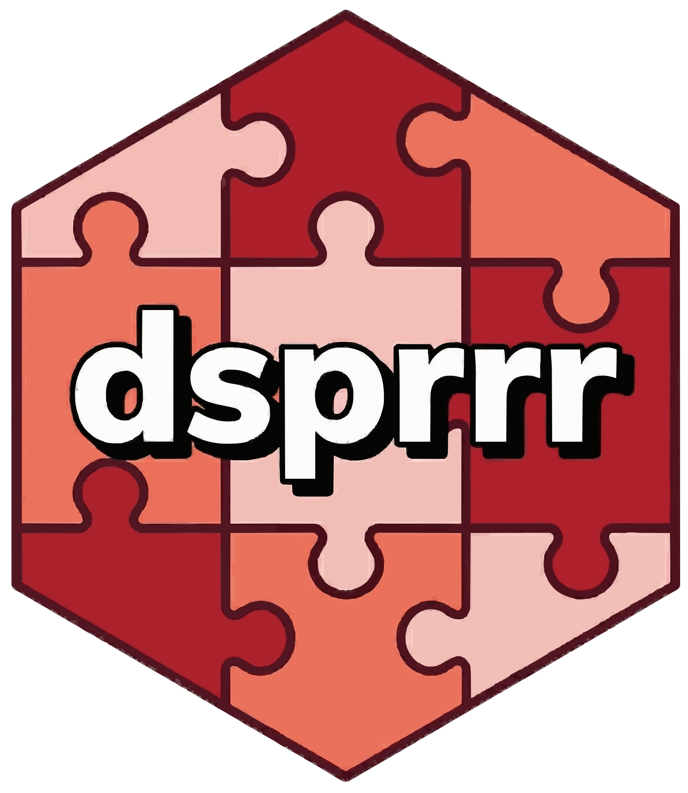

Flex: optimize a whole program
Source:vignettes/articles/flex-optimization.Rmd
flex-optimization.Rmdflex() makes the program structure part of the
optimization target. GEPA can change the number or order of predictor
calls and, in executable mode, add deterministic logic or call a tool
supplied by your application. Flex is experimental, so its source format
and behavior may change.
Start with declarative JSON when the workflow is a bounded graph of model steps. Use executable R only when the task calls for branching, computation, predictors created at run time, or named tools.
| What may change? | Use | Execution boundary |
|---|---|---|
| Instructions or examples inside a fixed module | A regular module and teleprompter | Normal module runtime |
| A known sequence of model steps | JSON Flex | Validated data; no code interpreter |
| Branches, deterministic logic, or selected tools | Executable Flex | Fresh runner; sandbox optimizer-authored code |
A small JSON run needs no interpreter
The default source is a one-step JSON program. This example runs a
real run() call against a deterministic local Chat fixture.
It needs neither an API key nor a separate code interpreter:
library(dsprrr)
route_signature <- signature(
"ticket -> queue: enum('database', 'security', 'payments', 'identity')",
instructions = "Route each support ticket to its owning queue."
)Before running the JSON example in your own R session, run the fixture definitions in the appendix once. The deterministic Chat fixture counts actual task and proposer requests, while its fixed response rules leave metric scoring and candidate selection to GEPA.
json_program <- suppressMessages(suppressWarnings(flex(route_signature)))
json_fixture <- new_route_fixture()
json_result <- run(
json_program,
ticket = "[INC-SEC-9] unusual-login burst",
.llm = json_fixture$chat,
.cache = FALSE,
.return_format = "structured"
)
cat(json_program$module_src, "\n")
#> {"schema_version":1,"steps":[{"name":"predict","primitive":"predict","signature":"$outer","inputs":{"ticket":"$input.ticket"}}],"outputs":{"queue":"$step.predict.queue"}}
json_result$output
#> $queue
#> [1] "security"
json_result$metadata$predictor_calls
#> [1] 1
stopifnot(
identical(json_result$output, list(queue = "security")),
identical(json_result$metadata$predictor_calls, 1L)
)The fixture makes task predictions repeatable. The router below still
runs through Flex’s actual R bridge, predictor, tool,
compile() and evaluate() contracts. The fixed
proposer demonstrates the optimizer plumbing; a live search is needed to
assess whether a model can discover this candidate.
The routing task
A support team routes tickets to database, security, payments, or identity. Some tickets have an incident code with a catalog owner. Others need a language-model prediction. The search uses separate training and validation rows. The holdout data is introduced only after compilation.
train <- data.frame(
ticket = c(
"[INC-SEC-9] unusual-login burst",
"Password reset links expire immediately"
),
queue = c("security", "identity")
)
validation <- data.frame(
ticket = c(
"[INC-PAY-4] capture queue is growing",
"Renewal created two invoices"
),
queue = c("payments", "payments")
)
stopifnot(length(intersect(train$ticket, validation$ticket)) == 0L)The named catalog is application-owned. Executable Flex can request only this tool; the optimizer does not receive the closure environment or the rest of the R session.
lookup_incident <- local({
catalog <- c(
"INC-DB-17" = "database",
"INC-SEC-9" = "security",
"INC-PAY-4" = "payments"
)
function(ticket) {
hit <- names(catalog)[vapply(
names(catalog),
grepl,
logical(1),
x = ticket,
fixed = TRUE
)]
if (!length(hit)) {
return(list(found = FALSE))
}
list(found = TRUE, queue = unname(catalog[[hit[[1L]]]]))
}
})
lookup_incident("[INC-DB-17] replicas unavailable")
#> $found
#> [1] TRUE
#>
#> $queue
#> [1] "database"
lookup_incident("A password reset email is late")
#> $found
#> [1] FALSECompile with a deterministic proposer
This executable R example needs callr, an optional
dsprrr dependency used by r_code_runner() to start an R
subprocess. Install it once before continuing:
install.packages("callr")The baseline makes one predictor call for every ticket. The fixed, reviewed candidate first asks the catalog about incident codes, returns a known owner directly, and calls one predictor for everything else.
The following Chat fixture returns that candidate when GEPA asks for
module_src. For task predictions it returns a deterministic
response from the prompt’s ticket text. GEPA runs the metric on Flex
predictions and traces, then selects from the resulting validation
scores.
baseline_source <- paste(
"router <- Predict(\"$outer\", instructions = \"Choose the owning queue.\")",
"forward <- function(ticket) router(ticket = ticket)",
sep = "\n"
)
selected_fixture_source <- paste(
"fallback <- Predict(\"$outer\", instructions = \"Route tickets without a known incident code.\")",
"forward <- function(ticket) {",
" if (grepl(\"INC-\", ticket, fixed = TRUE)) {",
" hit <- lookup_incident(ticket = ticket)",
" if (isTRUE(hit$found)) return(Prediction(queue = hit$queue))",
" }",
" fallback(ticket = ticket)",
"}",
sep = "\n"
)
make_router <- function(module_src) {
suppressWarnings(flex(
route_signature,
module_src = module_src,
tools = list(lookup_incident = lookup_incident),
interpreter_factory = r_code_runner,
source_format = "r",
require_sandbox = FALSE,
max_predictor_calls = 1L,
max_tool_calls = 1L
))
}
baseline <- make_router(baseline_source)This offline article runs only the two fixed source strings shown
here through r_code_runner(). That runner starts an R
subprocess, but it is not a security sandbox.
require_sandbox = FALSE is appropriate here only because
both sources are reviewed fixtures. For optimizer-authored R in an
application, keep the default sandbox requirement and configure an
enforced runner such as mcp_repl_runner() with Posit’s MCP
Console.
The metric checks the predicted queue against the row label. Correct answers score higher when they require no predictor; incorrect answers score zero. The execution trace supplies the call count used for that efficiency reward.
route_metric <- metric_with_trace(
function(prediction, expected, program_trace) {
correct <- identical(
as.character(prediction$queue),
as.character(expected$queue[[1L]])
)
predictor_calls <- program_trace$metadata$predictor_calls
if (is.null(predictor_calls)) {
predictor_calls <- 0L
}
list(
score = if (!correct) {
0
} else if (predictor_calls == 0L) {
1
} else {
0.5
},
feedback = if (!correct) {
sprintf(
"Expected '%s'; got '%s'.",
expected$queue[[1L]],
prediction$queue
)
} else if (predictor_calls > 0L) {
"Correct route; prefer the incident catalog when it has an owner."
} else {
"Correct route without a predictor call."
}
)
},
field = "queue"
)GEPA’s validation score ranks the candidates. The
evaluate() calls made by compile() execute the
bound Flex program, and route_metric reads the resulting
prediction and trace. Training rows are available to generate feedback;
validation rows decide which candidate survives.
optimizer_fixture <- new_route_fixture(
proposed_source = selected_fixture_source,
model = "fixture-gepa-router"
)
optimized <- compile(
baseline,
GEPA(
metric = route_metric,
population_size = 2L,
generations = 1L,
selection = "current_best",
track_best_outputs = TRUE,
verbose = FALSE
),
trainset = train,
valset = validation,
.llm = optimizer_fixture$chat,
control = optimizer_control(
max_metric_calls = 40L,
max_provider_calls = 30L,
max_elapsed_seconds = 300,
num_threads = 1L,
progress = FALSE
)
)
compile_result <- optimization_result(optimized)
gepa_budget <- compile_result$budget
budget_summary <- data.frame(
status = compile_result$status,
metric_calls = gepa_budget$metric_calls,
metric_call_limit = gepa_budget$limits$max_metric_calls,
provider_calls = gepa_budget$provider_calls,
provider_call_limit = gepa_budget$limits$max_provider_calls,
task_calls = optimizer_fixture$audit$task_calls,
proposal_calls = optimizer_fixture$audit$proposal_calls
)
stopifnot(
identical(compile_result$status, "completed"),
isTRUE(gepa_budget$metric_calls <= gepa_budget$limits$max_metric_calls),
isTRUE(gepa_budget$provider_calls <= gepa_budget$limits$max_provider_calls),
identical(
gepa_budget$provider_calls,
optimizer_fixture$audit$task_calls + optimizer_fixture$audit$proposal_calls
),
identical(optimizer_fixture$audit$proposal_calls, 1L),
isTRUE(all.equal(compile_result$best_score, 0.75)),
identical(optimized$module_src, selected_fixture_source)
)
budget_summary
#> status metric_calls metric_call_limit provider_calls provider_call_limit
#> 1 completed 8 40 7 30
#> task_calls proposal_calls
#> 1 6 1GEPA selected source is part of the compiled module. Render both complete programs before using the result:
selected_source <- optimized$module_src
cat("Baseline source:\n", baseline$module_src, "\n\n")
#> Baseline source:
#> router <- Predict("$outer", instructions = "Choose the owning queue.")
#> forward <- function(ticket) router(ticket = ticket)
cat("Selected source:\n", selected_source, "\n")
#> Selected source:
#> fallback <- Predict("$outer", instructions = "Route tickets without a known incident code.")
#> forward <- function(ticket) {
#> if (grepl("INC-", ticket, fixed = TRUE)) {
#> hit <- lookup_incident(ticket = ticket)
#> if (isTRUE(hit$found)) return(Prediction(queue = hit$queue))
#> }
#> fallback(ticket = ticket)
#> }
compile_result$lineage$best_candidate_id
#> [1] "candidate:98f898530da5c74b"
compile_result$best_score
#> [1] 0.75Evaluate once on independent holdout data
These six tickets have different text from the training and
validation rows. The data object is created after
compile(); the evaluations below happen outside GEPA
selection. The catalog knows three incident codes; the remaining tickets
use the task predictor.
holdout <- data.frame(
ticket = c(
"[INC-DB-17] replicas unavailable",
"[INC-SEC-9] login spray detected",
"[INC-PAY-4] payment capture is delayed",
"Reset email arrives after its token expires",
"Duplicate charge after a plan upgrade",
"Read traffic fails after failover"
),
queue = c(
"database",
"security",
"payments",
"identity",
"payments",
"database"
)
)
stopifnot(
length(intersect(holdout$ticket, train$ticket)) == 0L,
length(intersect(holdout$ticket, validation$ticket)) == 0L
)
compile_prompts <- optimizer_fixture$audit$prompts
holdout_absent_from_compile <- !any(vapply(
holdout$ticket,
grepl,
logical(1),
x = paste(compile_prompts, collapse = "\n"),
fixed = TRUE
))
stopifnot(holdout_absent_from_compile)
accuracy <- metric_exact_match(field = "queue")
before_fixture <- new_route_fixture(model = "fixture-holdout-before")
after_fixture <- new_route_fixture(model = "fixture-holdout-after")
before <- evaluate(
baseline,
holdout,
metric = accuracy,
.llm = before_fixture$chat,
.cache = FALSE,
.progress = FALSE
)
after <- evaluate(
optimized,
holdout,
metric = accuracy,
.llm = after_fixture$chat,
.cache = FALSE,
.progress = FALSE
)
count_metadata_calls <- function(result, field) {
sum(vapply(
result$metadata,
function(metadata) {
value <- metadata[[field]]
if (is.null(value)) 0L else as.integer(value)
},
integer(1)
))
}
heldout <- data.frame(
program = c("baseline", "selected"),
exact_match_quality = c(before$mean_score, after$mean_score),
predictor_calls = c(
count_metadata_calls(before, "predictor_calls"),
count_metadata_calls(after, "predictor_calls")
),
tool_calls = c(
count_metadata_calls(before, "tool_calls"),
count_metadata_calls(after, "tool_calls")
),
fixture_model_calls = c(
before_fixture$audit$task_calls,
after_fixture$audit$task_calls
)
)
heldout
#> program exact_match_quality predictor_calls tool_calls fixture_model_calls
#> 1 baseline 1 6 0 6
#> 2 selected 1 3 3 3The fixture counters and Flex trace metadata are execution counts. The acceptance decision below uses the independent exact-match results and those observed calls.
same_quality <- isTRUE(before$mean_score == after$mean_score)
fewer_model_calls <- isTRUE(
after_fixture$audit$task_calls < before_fixture$audit$task_calls
)
accepted <- same_quality && fewer_model_calls
decision <- data.frame(
same_heldout_quality = same_quality,
fewer_fixture_model_calls = fewer_model_calls,
accepted = accepted
)
decision
#> same_heldout_quality fewer_fixture_model_calls accepted
#> 1 TRUE TRUE TRUE
stopifnot(
isTRUE(before$mean_score == 1),
isTRUE(after$mean_score == 1),
isTRUE(heldout$predictor_calls[[1L]] == before_fixture$audit$task_calls),
isTRUE(heldout$predictor_calls[[2L]] == after_fixture$audit$task_calls),
isTRUE(heldout$predictor_calls[[1L]] == 6L),
isTRUE(heldout$predictor_calls[[2L]] == 3L),
isTRUE(heldout$tool_calls[[1L]] == 0L),
isTRUE(heldout$tool_calls[[2L]] == 3L),
isTRUE(accepted)
)Here both programs route all six holdout tickets correctly. The selected source uses three tool calls and three predictor calls; the baseline uses six predictor calls. Treat this deterministic result as execution-path evidence; a live search is needed to assess whether a model would invent the same program.
optimization_result() keeps the compile budget and
selection lineage available for inspection:
list(
best_candidate_id = compile_result$lineage$best_candidate_id,
validation_score = compile_result$best_score,
budget = budget_summary,
holdout_absent_from_compile = holdout_absent_from_compile,
heldout = heldout,
acceptance = decision
)
#> $best_candidate_id
#> [1] "candidate:98f898530da5c74b"
#>
#> $validation_score
#> [1] 0.75
#>
#> $budget
#> status metric_calls metric_call_limit provider_calls provider_call_limit
#> 1 completed 8 40 7 30
#> task_calls proposal_calls
#> 1 6 1
#>
#> $holdout_absent_from_compile
#> [1] TRUE
#>
#> $heldout
#> program exact_match_quality predictor_calls tool_calls fixture_model_calls
#> 1 baseline 1 6 0 6
#> 2 selected 1 3 3 3
#>
#> $acceptance
#> same_heldout_quality fewer_fixture_model_calls accepted
#> 1 TRUE TRUE TRUETry a live search
The deterministic journey above runs in documentation builds without
credentials. To try a stochastic search, install mcptools
and its posit-mcp-repl executable, then opt in to the chunk
below. Optimizer-written R should run with the default enforced-sandbox
requirement.
live_baseline <- flex(
route_signature,
module_src = baseline_source,
tools = list(lookup_incident = lookup_incident),
interpreter_factory = function() mcp_repl_runner(timeout = 45),
source_format = "r",
max_predictor_calls = 1L,
max_tool_calls = 1L
)
task_chat <- ellmer::chat_openai(model = "gpt-6-luna")
reflection_chat <- ellmer::chat_openai(model = "gpt-6-astra")
live_optimized <- compile(
live_baseline,
GEPA(
metric = route_metric,
population_size = 4L,
generations = 2L,
selection = "current_best",
seed = 42L,
verbose = FALSE
),
trainset = train,
valset = validation,
.llm = task_chat,
.reflection_llm = reflection_chat,
control = optimizer_control(
max_metric_calls = 80L,
max_provider_calls = 50L,
max_cost = 1,
progress = FALSE
)
)
optimization_result(live_optimized)Review the complete module_src, then evaluate the
candidate once on a holdout set that was not used for search. Keep the
model, package version, data splits, metric, seed and budget with the
selected source.
Choose the right source format
JSON is data describing an acyclic graph of Predict and
ChainOfThought steps. Its references point to outer inputs
or earlier step outputs, and Flex checks field types before execution.
It needs no code interpreter.
Executable R defines a top-level forward() function and
can use Predict(), ChainOfThought(),
Prediction(), the other documented Flex constructors, and
the named tools you supplied. The source runs in a fresh runner and
crosses a versioned JSON bridge for predictor and tool calls. Host tools
retain their own permissions, even when the source runs in a
sandbox.
max_predictor_calls and max_tool_calls
bound the direct calls made by an invocation. Agentic predictors such as
ReAct or RLM have their own limits. Guest-side computation runs again
from the beginning after a bridged response, so keep it pure and bound
loops explicitly. Executable Flex runs dataset rows sequentially and
does not stream tokens.
Use Flex when the outcome is measurable and the best choice among model calls, deterministic logic and selected tools is still open. If the workflow is already clear, prefer a regular module or an explicit pipeline. See Choose an optimizer for the other optimization paths.
Appendix: offline fixture source
The article hides fixture setup from the main walkthrough. This chunk prints the exact Chat fixture code used above so you can reproduce the deterministic run or adapt its response rules.
fixture_chat_class <- R6::R6Class(
"Chat",
public = list(
turns = NULL,
initialize = function(model, responder) {
self$turns <- list()
private$model <- ellmer::Model(name = model, extra_args = list())
private$provider <- ellmer::Provider(name = "fixture", base_url = "")
private$responder <- responder
},
chat = function(prompt, ...) {
private$responder(paste(as.character(prompt), collapse = "\n"), NULL, ...)
},
chat_structured = function(prompt, type, ...) {
private$responder(
paste(as.character(prompt), collapse = "\n"),
type,
...
)
},
stream = function(...) character(),
get_turns = function() self$turns,
set_turns = function(turns) {
self$turns <- turns
invisible(self)
},
last_turn = function(role = NULL) NULL,
get_model = function() private$model@name,
get_provider = function() private$provider,
get_model_object = function() private$model
),
private = list(model = NULL, provider = NULL, responder = NULL),
lock_objects = FALSE,
parent_env = globalenv()
)
new_route_fixture <- function(
proposed_source = NULL,
model = "fixture-router"
) {
audit <- new.env(parent = emptyenv())
audit$prompts <- character()
audit$proposal_calls <- 0L
audit$task_calls <- 0L
responder <- function(prompt, type, ...) {
prompt <- paste(as.character(prompt), collapse = "\n")
audit$prompts <- c(audit$prompts, prompt)
fields <- names(type@properties)
if (identical(fields, "module_src")) {
if (is.null(proposed_source)) {
stop("The JSON example does not configure a proposer")
}
audit$proposal_calls <- audit$proposal_calls + 1L
return(list(module_src = proposed_source))
}
if (!identical(fields, "queue")) {
stop("Unexpected structured output requested by the fixture")
}
audit$task_calls <- audit$task_calls + 1L
queue <- if (
grepl(
"INC-DB-17|Queries time out|Read traffic",
prompt,
ignore.case = TRUE
)
) {
"database"
} else if (
grepl(
"INC-SEC-9|unusual-login|login spray",
prompt,
ignore.case = TRUE
)
) {
"security"
} else if (
grepl(
"INC-PAY-4|renewal|duplicate charge|Card charged twice",
prompt,
ignore.case = TRUE
)
) {
"payments"
} else if (
grepl("Password reset|Reset email", prompt, ignore.case = TRUE)
) {
"identity"
} else {
stop("Unexpected ticket in the deterministic task fixture")
}
list(queue = queue)
}
list(
chat = fixture_chat_class$new(model, responder),
audit = audit
)
}